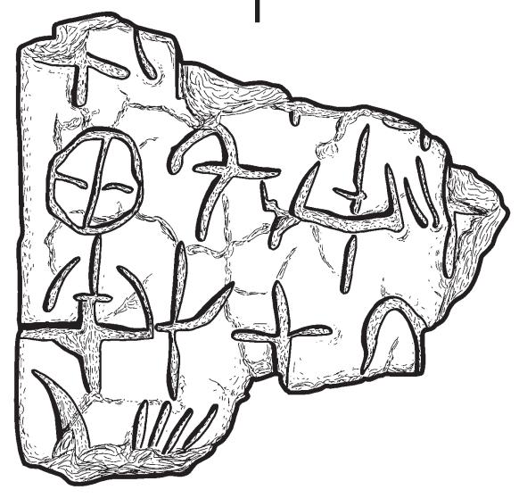

-
GO2r
Names
Aliases for the inscription.
GO2r, GO 2r
Support
Type of Object.
Tablet
Location
Site where object was found.
Gournia
Findspot
Location at Site.
Unavailable

Scribe
Writer of Inscription.
Unavailable
Context
Approximate Date of Inscription.
Unavailable
Dimensions
Height x Length x Thickness.
Catalogue
Museum Reference Number.
Readings
1 1 0 SI certain
2 2 1 KA certain
2 2 2 ¹⁄₈ certain
2 3 3 SI certain
2 3 4 2 doubtful
2 4 5 DA certain
3 5 6 SI certain
3 5 6 DA certain
3 5 6 RO certain
3 5 7 ¹⁄₄ certain
4 6 8 SE certain
Linear A Transcription
A Linear A transcription with words parsed separately.
Line breaks match the inscription.
𐘤
𐘾𐝄𐘤𐄈𐘀
𐘤𐘀𐘁𐝃
𐘈
ASCII Transcription
An ASCII transcription with words parsed separately.
Line breaks match the inscription.
SI
KA¹⁄₈SI2DA
SIDARO¹⁄₄
SE
Linear A Tabulation
A Linear A transcription with words parsed separately.
Line breaks are logical, e.g. to represent a list.
𐘤
𐘾𐝄
𐘤𐄈
𐘀
𐘤𐘀𐘁𐝃
𐘈
ASCII Tabulation
An ASCII transcription with words parsed separately.
Line breaks are logical, e.g. to represent a list.
SI
KA¹⁄₈
SI2
DA
SIDARO¹⁄₄
SE
References